🎓 Formación Académica
- Doble Grado en Publicidad y Marketing – Universidad Villanueva (2022 - Actualidad) – Nota media: 8,71 - Excelencia Académica
- Intercambio Erasmus – UCLL-University Colleges Leuven-Limburg, Lovaina, Bélgica (Septiembre 2025 - Enero 2026)
- Bachillerato en Ciencias Sociales – Fomento Fundación - Nota media: 9,17
- Educación Secundaria – Colegio J.H: Newman - Nota media: 7,5
🏆 Logros y Concursos
- 🏅 2º PREMIO SEMANA BIP "INTERCULTURAL COMMUNICATION" UCLL LEUVEN, BÉLGICA
- Plan de Comunicación Intercultural para hospitales con equipo de Albania, Croacia, Serbia y España.
- 🏅 MEJOR TRABAJO DE CLASE EN ASIGNATURAS:
- Marketing Digital, Redacción Publicitaria, Proceso Publicitario, Fundamentos de la Publicidad
- Análisis de Mercados (Cualitativos y Cuantitativos), Análisis del Consumidor
- 🚀 CONCURSOS:
- 📝 **FINALISTA** Mahou Lab 2025 (Propuesta creativa para GEN Z)
- 📝 Publicatessen 2025 (Movistar +)
- 📝 Publicatessen 2024 (La Liga F)
- 📝 "La Pieza" 2024 (Concienciación sobre Fake News)
📚 Herramientas y Formación Adicional
- 💻 Formación PAQUETE MICROSOFT (Office)
- 💻 Formación PAQUETE ADOBE (Photoshop, Illustrator, Premiere Pro, In Design, Firefly)
- 💻 Herramientas de IA: Chat GPT, Perplexity, Gemini, Grok, Claude.
- 💻 Otros: Canva, Visual Studio Code, Programación Web con IA.
- 📺 CURSO DE 30 HORAS EDICIÓN DE VÍDEO Y MANEJO DE CÁMARAS DE TV (Universidad Villanueva, 2022)
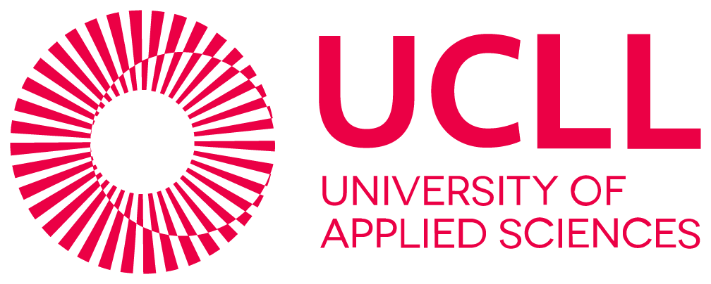
 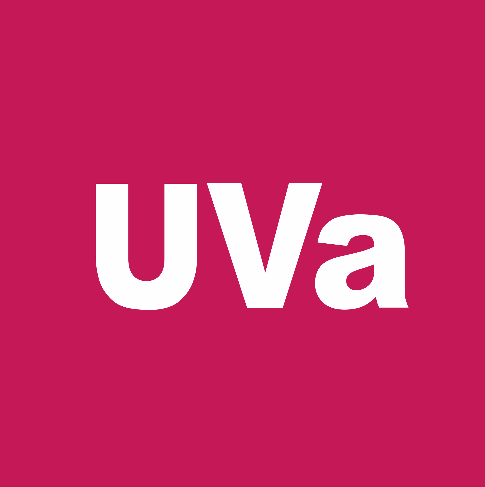
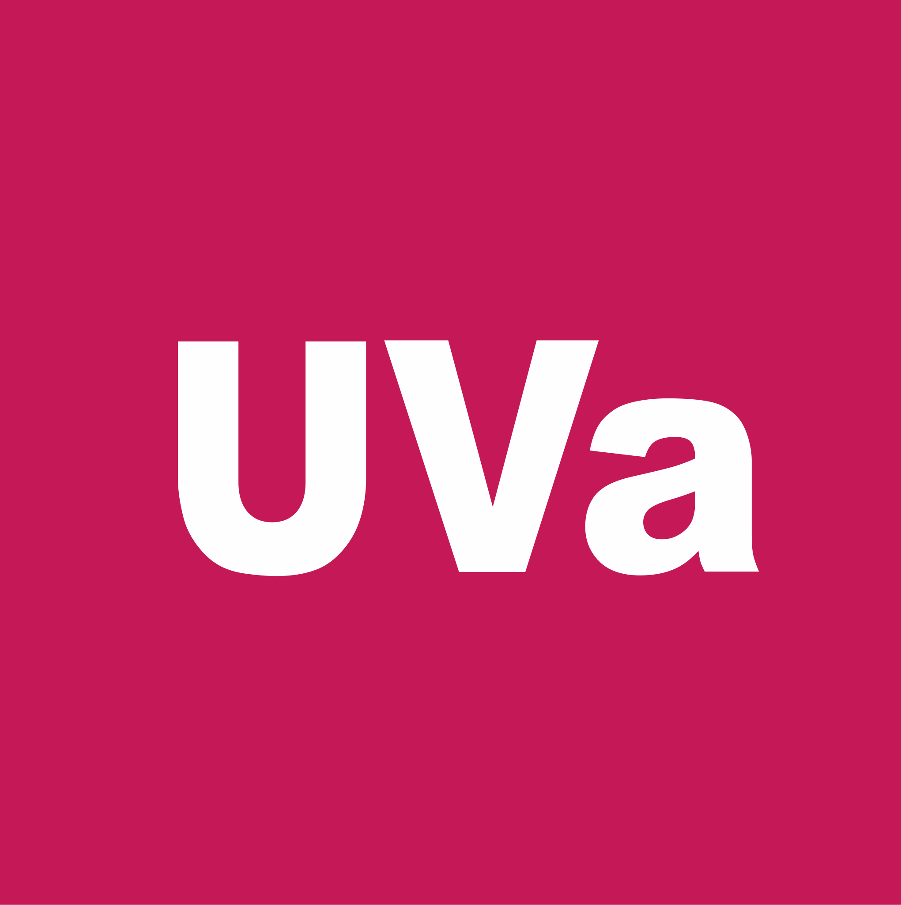
 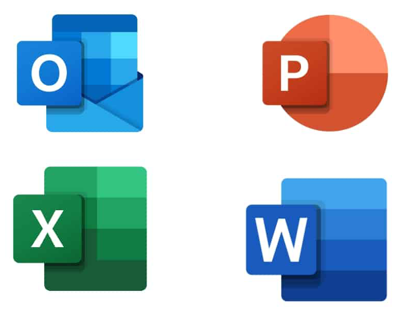
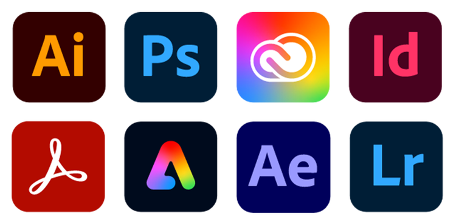
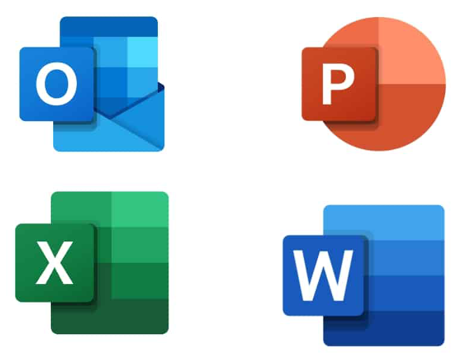
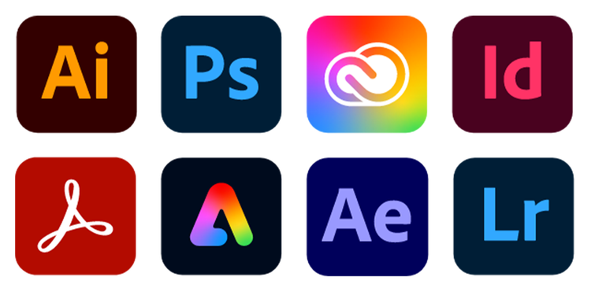
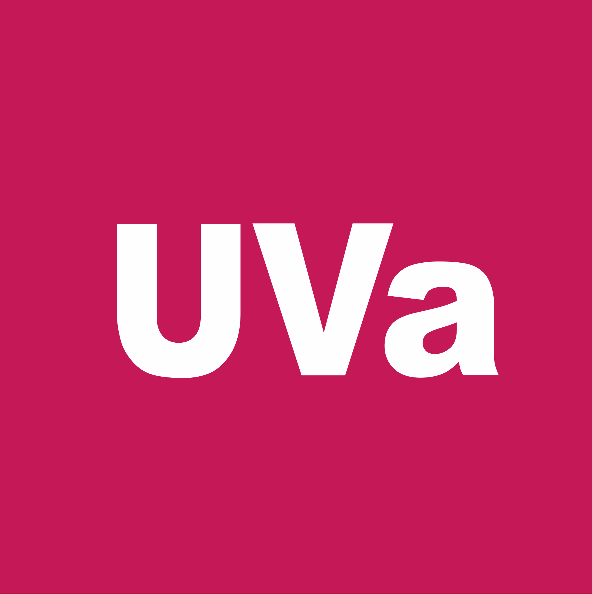
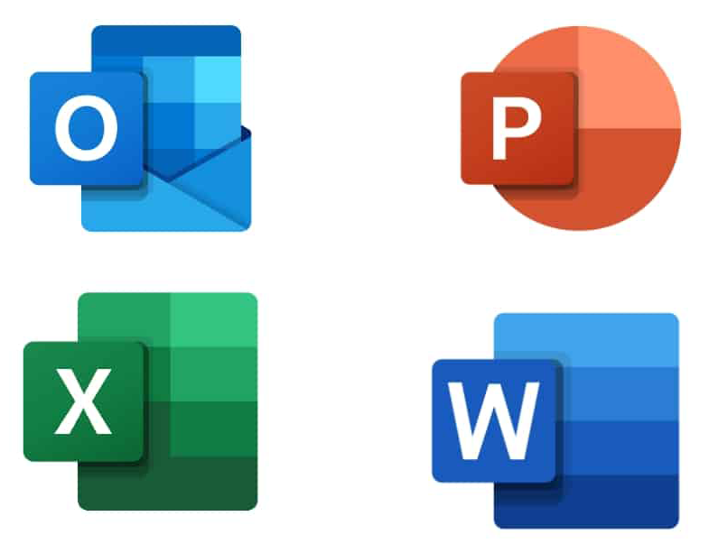
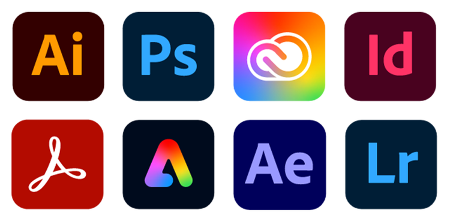
🛠️ Experiencia Laboral
- Vendedor en FNAC - Departamento de Producto Técnico (Dic. 2022 - Feb. 2023) / (Dic. 2024 - Ene. 2025)
- Vendedor en FNAC - Departamento de Atención al Cliente (Dic. 2023 - Ene. 2024)
- Ayudante de cocina y camarero – Eventos multitudinarios (2024-2025)
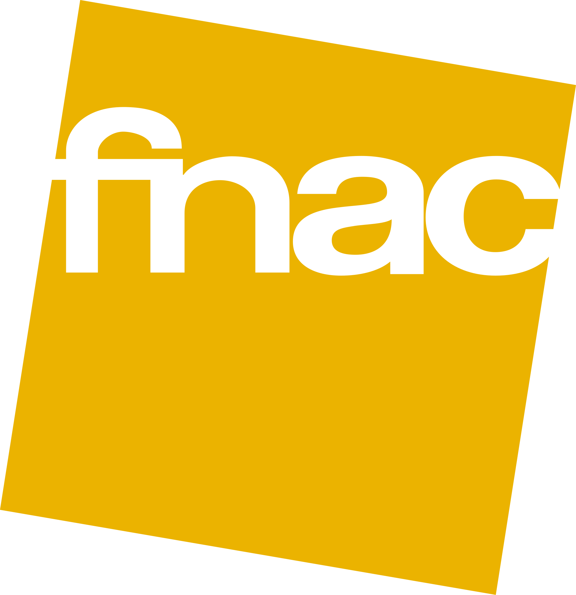
🌍 Idiomas
- Español (Nativo)
- Inglés (Nivel B2 – Cambridge) - Uso activo en entornos académicos y multiculturales.
✨ Habilidades
- ✅ Trabajador, formal y responsable.
- ✅ Proactivo y abierto a nuevas experiencias laborales.
- ✅ Resolución de problemas y mentalidad positiva para el crecimiento profesional.
- ✅ Buen trato con el público y trabajo en equipo.
- ✅ Carné de conducir B2
❤️ Voluntariados
- Voluntariado con personas sin hogar (2023)
- Campaña Villanueva Solidaria (2020)
- Banco de Alimentos (2017 - 2018)